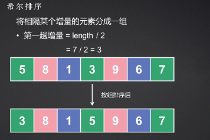
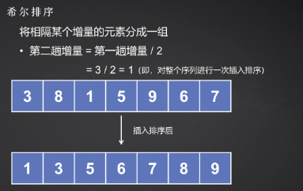
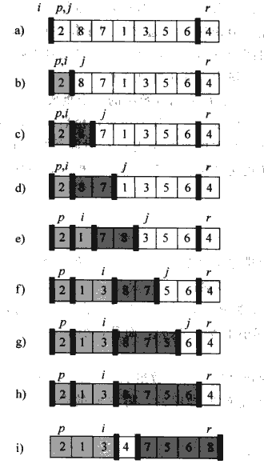
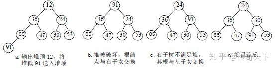
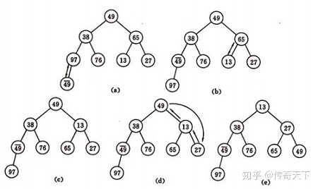
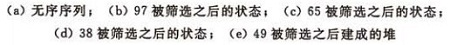

常用的排序算法
0 前言
本文代码部分主要基于C++语言，因为我平时用C#比较多，所以也增加了部分C#知识点。
1 稳定性
排序算法的稳定性指的是：对于两个相等的数据，它们的先后顺序在排序结束后依旧保持原样。
2 插入排序 insertionSort
2.1 描述
它的工作原理很像我们平时打扑克牌时整理手牌的过程：每摸到一张新牌，都会将其插入到左手已经排好序的牌堆中，直至所有的牌都在手里排列整齐。
1 | std::array<int,3> temp = {2,3,1}; |
2.2 实现
1 |
|
2.3 评价
- 稳定
- 时间复杂度
- $1+2+3+…+(n-1)=\frac{n^2}{2}=O(n^2)$
- 空间复杂度
- $O(1)$
3 希尔排序 shellSort
3.1 描述
希尔排序也称“缩小增量排序”，是插入排序的一种更高效的改进版本，是第一批突破$O(n^2)$时间复杂度的排序算法之一。
它的核心思想是“远距离的插入排序”。传统的插入排序每次只能将元素移动 1 位。如果一个很小的数在数组末尾，它必须经过多次比较和移动才能到达开头。希尔排序通过引入增量（gap）的概念，让元素可以“跳跃式”地移动：
- 将整个序列按照一定的间隔（增量）分成若干子序列
- 对每个子序列进行插入排序
- 逐渐缩小增量，重复步骤
- 最后当增量为1时，对全体元素进行一次标准插入排序
增量（Gap）的概念：
希尔排序的关键在于增量序列。常用的增量定义是 $gap = \lfloor length/2 \rfloor$，每轮减半，直到 $gap = 1$。


3.2 实现
1 |
|
3.3 评价
- 不稳定
- 时间复杂度
- $O(n^{1.3…2})$（取决于增量选择）
- 空间复杂度
- $O(1)$
3.4 优化：不同的增量选择
希尔排序的效率几乎完全取决于增量序列（Gap Sequence）的选择。
希尔最初建议的序列（$N/2, N/4, \dots, 1$）虽然简单，但在最坏情况下仍会退化到 $O(n^2)$。这是因为这种序列的项之间往往不是互质的，导致较小的增量可能在重复排序之前已经处理过的元素。
1 Hibbard 增量序列
- 公式：$2^k - 1$（如：1, 3, 7, 15, 31…）
- 最坏时间复杂度：$O(n^{1.5})$
- 特点：这个序列避免了希尔增量中“偶数位置元素在最后一步前从不交换”的问题。因为相邻项互质，它能比原始序列更早地让序列变得“基本有序”
2 Knuth 增量序列
- 公式：$\frac{1}{2}(3^k - 1)$（如：1, 4, 13, 40, 121…）
- 最坏时间复杂度：$O(n^{1.5})$
- 特点：这是计算机科学家 Donald Knuth 推荐的序列。在实际应用中，它在中小规模数据上的表现非常出色
3 Sedgewick 增量序列（目前已知最优之一）
- 公式：通过两个公式交替生成：
- $9 \cdot 4^i - 9 \cdot 2^i + 1$
- $4^i - 3 \cdot 2^i + 1$
- 序列值：1, 5, 19, 41, 109, 209…
- 最坏时间复杂度：$O(n^{1.3})$
- 特点：这是目前最常用的高性能序列之一。实验证明，在 $n$ 达到数万时，它的性能表现优于以上所有序
如何在代码里应用？以Knuth序列为例：
1 | void shellSortKnuth(std::vector<int>& arr) { |
4 冒泡排序 bubbleSort
4.1 描述
冒泡排序通过相邻元素的比较和交换，使较大的元素逐渐向后移动。
- 一次冒泡：从左到右比较相邻的两个元素。如果左边比右边大，就交换位置。
- 重复进行：每进行一轮冒泡，当前未排序部分中“最大”的元素就会被推到最后的位置。
4.2 实现
1 |
|
4.3 评价
- 稳定
- 时间复杂度
- $O(n^2)$
- 空间复杂度
- $O(1)$
5 快速排序 quickSort
5.1 描述
快速排序是冒泡排序的改进（本质上都是交换排序），但快速排序通过引入跳跃式交换和分治，彻底解决了冒泡排序的核心痛点。
怎么理解改进：
- 从相邻交换到跨度交换
- 冒泡排序只能相邻两个元素进行比较和交换，如果要让一个极小的数从数组末尾回到开头，它必须像“气泡”一样，一格一格地游过去。每一轮遍历只能确保一个元素到达正确位置
- 快速排序通过选择一个基准（pivot），一次性将所有比基准小的数交换到左边，右边留下比基准大的数，这种跨距离交换大大减少了总的交换次数
- 消除冗余比较
- 冒泡排序每一轮扫描都很盲目，即便某些区域已经局部有序，由于它缺少全局视角，仍然需要重复进行相邻比较
- 快速排序则利用了分治策略，一旦基准点确定，左右区域彻底隔离，左边的数永远不需要和右边的数再进行比较
快速排序的核心在于“分区”操作，它的逻辑如下：
- 挑选基准（pivot）：从数组中选出一个元素作为基准
- 分区：重新排列数组，把比基准小的元素挪到它左边，比基准大的挪到它右边
- 递归：对基准左边和右边的子数组分别重复上述过程，直到子数组长度为 1 或 0

5.2 实现
1 |
|
5.3 评价
- 不稳定
- 举例：例如$5_a$ $5_b$ 1这个例子，以1为基准值，完成一次排序后变为：1 $5_b$ $5_a$
- 时间复杂度
- $O(nlogn)$
- 空间复杂度
- 原地排序，但递归有额外空间消耗
- $O(logn)$（快速排序的递归树像一棵平衡二叉树，深度为$log_2n$，如果选择基准不当导致最坏情况，二叉树会呈一条直线，空间复杂度退化到$O(n^2)$）
5.4 优化
主要目的是为了解决快排在面临近乎有序的数组时，性能退化到$O(n^2)$的问题（递归树长度增加）。
5.4.1 基准值选择优化
1 随机基准
1 | void selectPivotRandomly(vector<int>& nums,int low,int high){ |
2 三数取中法
1 | void selectMidOfThree(std::vector<int>& arr, int low, int high) { |
5.4.2 分区方法优化
我们上面使用的分区方法是单路划分，在数组中全是重复元素时会退化到$O(n^2)$。针对这一点，有两种常见分区方法可以使用，主要思路是通过某种手段保证每次左右分区的平衡。
1 双指针分区
它通过两个指针从区间的两端向中间靠拢，当左侧指针遇到比pivot大的元素，右侧指针遇到比pivot小的元素时，进行交换。关键点是即使遇到和pivot相等的元素也进行交换。
这样虽然交换次数增多了，但能够强制保证分区平衡，避免退化。
1 | int partition(vector<int>& nums, int low, int high) { |
2 三路划分
重复元素处理王者。
普通的划分（如单向或双指针）只能将数组分为“小于等于”和“大于”两部分，而三路划分能直接将数组切分为三个区间：小于基准值、等于基准值、大于基准值。
我们需要三个指针来维持这个结构：
lt(less than)：指向“等于区”的第一个元素gt(greater than)：指向“等于区”的最后一个元素i(iterator)：当前扫描的元素
具体操作逻辑：
- 如果
nums[i] > pivot：将nums[i]与nums[lt]交换，i和lt同时向右移动一位。（注：此处以升序为例，若降序则逻辑反转） - 如果
nums[i] < pivot：将nums[i]与nums[gt]交换，gt向左移动一位，但i不动（因为从右边换过来的数还没检查过）。 - 如果
nums[i] == pivot：不需要交换，直接i++。
1 | void quickSort3Way(vector<int>& nums, int low, int high) { |
6 归并排序 mergeSort
6.1 描述
归并排序是一种基于分治的排序算法。


6.2 实现
1 |
|
6.3 评价
- 稳定
- 时间复杂度
- 始终为$O(nlogn)$
- 空间复杂度
- $O(n)$（需要一个和原数组一样大的辅助空间）
7 选择排序 selectSort
7.1 描述
核心思想是不断地从“未排序序列”中找最小或者最大的元素，放到“已排序序列”的末尾。
7.2 实现
1 |
|
7.3 评价
- 不稳定
- 例如$5_a$ $5_b$ 1，排序后变为 1 $5_b$ $5_a$
- 时间复杂度
- $O(n^2)$
- 空间复杂度
- $O(1)$
7.4 选择排序VS冒泡排序
一般选择排序更快一点，因为每一次排序里，冒泡排序每一对相邻元素不满足条件都要进行交换，交换频率很高，而选择排序只需要交换一次。
8 堆排序 heapSort
8.1 描述
堆排序是选择排序的极高效进化，在选择排序中，我们为了找最小值需要遍历整个数组（$O(n)$），但堆排序利用了一种特殊的数据结构，将找最小值的时间缩短到了$O(logn)$。
堆对应一棵完全二叉树，且所有非叶结点的值均不大于（或不小于）其子女的值，根结点（堆顶元素）的值是最小（或最大）的，每次都取堆顶的元素，将其放在序列最后面，然后将剩余的元素重新调整为最小（大）堆，依次类推，最终得到排序的序列。
堆排序分为大顶堆和小顶堆排序。大顶堆：堆对应一棵完全二叉树，且所有非叶结点的值均不小于其子女的值，根结点（堆顶元素）的值是最大的。而小顶堆正好相反，小顶堆：堆对应一棵完全二叉树，且所有非叶结点的值均不大于其子女的值，根结点（堆顶元素）的值是最小的。
实现堆排序需解决两个问题：
- 如何将n个待排序的数建成堆?
- 输出堆顶元素后，怎样调整剩余n-1个元素，使其成为一个新堆?
首先讨论第二个问题：输出堆顶元素后，怎样对剩余n-1元素重新建成堆？
调整小顶堆的方法：
- 设有m 个元素的堆，输出堆顶元素后，剩下m-1 个元素。将堆底元素送入堆顶（（最后一个元素与堆顶进行交换），堆被破坏，其原因仅是根结点不满足堆的性质。
- 将根结点与左、右子树中较小元素的进行交换。
- 若与左子树交换：如果左子树堆被破坏，即左子树的根结点不满足堆的性质，则重复方法 （2）.
- 若与右子树交换，如果右子树堆被破坏，即右子树的根结点不满足堆的性质。则重复方法 （2）.
- 继续对不满足堆性质的子树进行上述交换操作，直到叶子结点，堆被建成。
称这个自根结点到叶子结点的调整过程为筛选。如图：

再讨论第一个问题，如何将n 个待排序元素初始建堆？建堆方法：对初始序列建堆的过程，就是一个反复进行筛选的过程。
n 个结点的完全二叉树，则最后一个结点是第n/2个结点的子树。
筛选从第n/2个结点为根的子树开始，该子树成为堆。
- 之后向前依次对各结点为根的子树进行筛选，使之成为堆，直到根结点。
如图建堆初始过程：无序序列：（49，38，65，97，76，13，27，49）


8.2 实现
升序数组用大顶堆排序。
实现步骤：
- 建堆：将一个无序数组调整为大顶堆
- 交换：将堆顶元素（最大值）放置数组末端（从堆中去除），此时，最大值已经回到了它最终应该在的位置
- 重建堆：由于第二步交换将数组末端的数交换到了堆顶，破坏了原来的堆结构，因此我们需要对剩余部分进行堆重建
- 重复2/3，直至堆大小变为1
1 |
|
8.3 评价
- 不稳定
- 时间复杂度
- 始终为$O(nlogn)$，建堆是$O(n)$，n-1次调整是$O(nlogn)$
- 空间复杂度
- $O(1)$
9 常用排序方法比对表
| 算法名称 | 平均时间复杂度 | 最坏时间复杂度 | 空间复杂度 | 稳定性 |
|---|---|---|---|---|
| 插入排序 | $O(n^2)$ | $O(n^2)$ | $O(1)$ | 稳定 |
| 希尔排序 | $O(n^{1.3})$ | $O(n^2)$ | $O(1)$ | 不稳定 |
| 冒泡排序 | $O(n^2)$ | $O(n^2)$ | $O(1)$ | 稳定 |
| 选择排序 | $O(n^2)$ | $O(n^2)$ | $O(1)$ | 不稳定 |
| 快速排序 | $O(n \log n)$ | $O(n^2)$ | $O(\log n)$ | 不稳定 |
| 归并排序 | $O(n \log n)$ | $O(n \log n)$ | $O(n)$ | 稳定 |
| 堆排序 | $O(n \log n)$ | $O(n \log n)$ | $O(1)$ | 不稳定 |
| 内省排序 | $O(n \log n)$ | $O(n \log n)$ | $O(\log n)$ | 不稳定 |
10 C++里的排序工具
10.1 std::sort()
内省排序，不稳定，时间复杂度为$O(nlogn)$。它是一个“三位一体”的混合算法，旨在平衡快排的速度和堆排的稳定性。
底层
- 第一阶段：快速排序 (Quick Sort)
- 默认使用快排。为了避免 $O(n^2)$ 的最坏情况，它通常采用 “三数取中法”（取首、尾、中三个数的中位数作为基准）来平衡分区
- 第二阶段：堆排序 (Heap Sort) 作为保底
- 这是 sort 聪明的地方。它会维护一个递归深度计数器。如果递归层数超过了 $\log N$ 的某个倍数，它认为当前的快排分区效率太低（可能退化），于是立刻切换到 堆排序。因为堆排序在最坏情况下也能保证 $O(n \log n)$
- 第三阶段：插入排序 (Insertion Sort) 收尾
- 当分区缩小到一定阈值（通常是 16 个元素以内）时，算法停止递归，转而使用 插入排序。因为在小规模数据下，插入排序没有递归开销且缓存友好，速度反而是最快的
使用
1 | vector<int> v = {3, 1, 4, 1, 5, 9}; |
10.2 std::stable_sort()
归并排序的变体，稳定，时间复杂度为$O(nlogn)$。
底层
主算法
- 归并排序，它会尝试申请一块和原数组一样大的辅助空间进行归并
自适应策略
内存充足：执行标准的 $O(nlog n)$ 归并
内存不足：如果系统无法分配辅助空间，它会退而求其次，改用一种复杂的、在原地进行的归并算法，虽然不需要额外空间，但时间复杂度会退化到 $O(nlog^2 n)$
优化
- 在子区间很小时，它同样会切换到插入排序来提升性能
10.3 只要前K名：std::partial_sort
底层使用堆排序，不稳定，时间复杂度为$O(nlogk)$。它会将前 $k$ 个最小元素排好序放在数组开头，剩下的元素乱序留在后面。
底层
- 取原数组的前K个元素，建立一个大顶堆
- 遍历剩余的n-K个元素
- 如果当前元素比堆顶（当前最大的元素）小，替换堆顶，执行adjustHeap
- 遍历结束后，数组的前K个位置存放的就是最小的K个数（但目前在大顶堆里是乱序的）
- 对前K个数执行堆排序的后半部分（不断交换并adjustHeap）
1 | // 把前 3 小的元素排在最前面 |
10.4 只要第K个元素：std::nth_element
基于快速排序，不稳定，平均时间复杂度为$O(n)$。它不关心前 $k$ 个是否有序，只保证第 $n$ 位置上的元素是正确的，且左边的都比它小，右边的都比它大。
底层
使用某种快排的改进算法
区别：
快排在分区后，会对左右两个子区间都进行递归
快速选择在分区后，会检查第 $n$ 个位置在哪个区间里。它只对包含第 $n$ 个位置的那一个子区间进行递归，另一个区间直接丢弃
1 | // 运行后，v[k] 位置上的就是整个数组第 k 小的数 |
10.5 基于vector建堆
1 | make_heap(v.begin(), v.end()); // 把 vector 变成堆 |
10.6 自定义比较逻辑
需要注意，比较逻辑必须严格遵循a==b时返回false。
10.6.1 使用Lambda表达式
1 |
|
10.6.2 greater实现简单降序
1 |
|
11 C#里的排序工具
11.1 Array.Sort()和List\.Sort()
底层实现和C++里的sort一致。
11.2 Enumerable.OrderBy（LINQ）
稳定，底层通常采用一种快速排序的变体或归并排序的实现，以保证排序算法的稳定性。
1 | using System.Linq; |
11.2 自定义比较逻辑
11.2.1 Lambda表达式
1 | List<int> list = new List<int> { 1, 4, 2, 8, 5 }; |
为什么a.CompareTo(b)是升序？
实际上是a-b，如果a小于b，则返回负数。
而sort方法实际上是接收一个整数，负数时，第一个参数在左边，正数时，第二个参数在左边。
因此当a小于b时，a-b<0，结果为负数，a排在左边，为升序。
11.2.2 Enumerable.OrderBy（LINQ）
稳定，底层是快排变体或归并排序，以保证相同元素的顺序。
1 | using System.Linq; |
11.2.3 实现IComparer\
实现 IComparer\
1 | public class IntDescendingComparer : IComparer<int> |
1 | List<int> numbers = new List<int> { 1, 5, 3, 9, 2 }; |
11.2.4 Span\.Sort()
现代 .NET（.NET Core 2.1+ 及 .NET 5/6/7/8+）中性能最顶级的排序手段。它之所以被称为“黑科技”，是因为它在保持高性能的同时，实现了对内存的绝对掌控。
优势
- 零分配：它直接在内存块上操作。无论数据是在堆上、栈上、还是非托管内存中，它都不需要创建多余的对象。
- 泛型特化：针对基本类型（如
int,double），它在底层有特殊的实现，能够极大地利用 CPU 指令集优化。 - 内存安全：它提供了指针级别的速度，但受到运行时边界检查的保护，不会像 C++ 裸指针那样容易导致崩溃。
1 | int[] arr = { 5, 2, 8, 1, 9 }; |
Span\
1 | // 定义一个结构体比较器 |
11.2.5* C#里Lambda性能
在 C# 中，Lambda 表达式不仅仅是“简写的函数”，它在底层涉及到了委托、闭包和即时编译（JIT）优化。
理解 Lambda 的性能，需要将其拆解为三个层面：调用开销、内存分配（GC 压力）和编译器黑魔法。
1 调用开销：委托
当你将 Lambda 传给 List\
- 委托调用：在底层，委托调用比直接调用方法（或 C++ 的内联 Lambda）慢一些。因为委托是一个对象，调用它需要通过一次间接寻址
- 无法内联：在 C++ 中，
std::sort会在编译时把 Lambda 逻辑直接嵌入。但在 C# 中，JIT 编译器通常很难跨委托进行内联优化。这意味着每比较一次，都要产生一次方法调用的成本
2 内存分配：闭包的陷阱
这是影响 C# Lambda 性能最关键的因素。Lambda 是否“捕获”了外部变量，性能天差地别。
无变量捕获
如果你写的 Lambda 只依赖参数：
1 | list.Sort((a, b) => b.CompareTo(a)); |
C# 编译器非常聪明。它会生成一个静态字段来缓存这个委托实例。这意味着除了第一次，后续调用完全零内存分配。
捕获外部变量（闭包）
如果你在 Lambda 里用到了外部的变量：
1 | int offset = 10; |
此时，编译器必须创建一个隐藏的类（DisplayClass），把 offset放进去，并在堆上实例化这个类。后果：每次调用这段代码，都会在堆上产生一个新的对象。在海量数据排序或高频循环中，这会产生大量的 GC压力，导致程序卡顿。
3 性能杀手：LINQ 中的 Lambda
虽然 list.OrderBy(x => x) 写起来很爽，但它的性能通常比 list.Sort() 慢 5-10 倍。
- 包装层数多：LINQ 内部会有多次迭代器转换
- 装箱：如果处理的是值类型（如 int、struct），LINQ 有时会发生装箱操作，极大损耗 CPU
- 通用性代价：LINQ 为了支持各种数据源，放弃了针对特定结构的底层优化
4 极端优化：如何跑得跟 C++ 一样快？
如果你在写游戏引擎或高性能组件，觉得 Lambda 慢，有几种进阶方案：
- 方案 A：使用 struct 实现 IComparer\
- 在 C# 中，如果 Sort 接收一个 struct 类型的比较器，JIT 往往能进行泛型特化，从而实现类似 C++ 的内联，消除调用开销
- 方案 B：Span
.Sort - 在 .NET Core 及后续版本中，使用 Span\
- 在 .NET Core 及后续版本中，使用 Span\
5 性能排名
| 排名 | 方法 | 性能特点 |
|---|---|---|
| 1 (最快) | Span<T>.Sort 或 Array.Sort |
接近硬件极限，零分配。 |
| 2 | List<T>.Sort (不捕获变量) |
只有委托调用开销，无 GC 压力。 |
| 3 | List<T>.Sort (捕获变量) |
有 GC 压力，高频调用需警惕。 |
| 4 (最慢) | LINQ OrderBy |
开发快，运行慢，内存占用高。 |
12 练习
215 数组中第K个最大元素
堆排序
1 |
|
快排
要避免快排因为退化到$O(n^2)$过不了，所以用了三路划分。
1 |
|